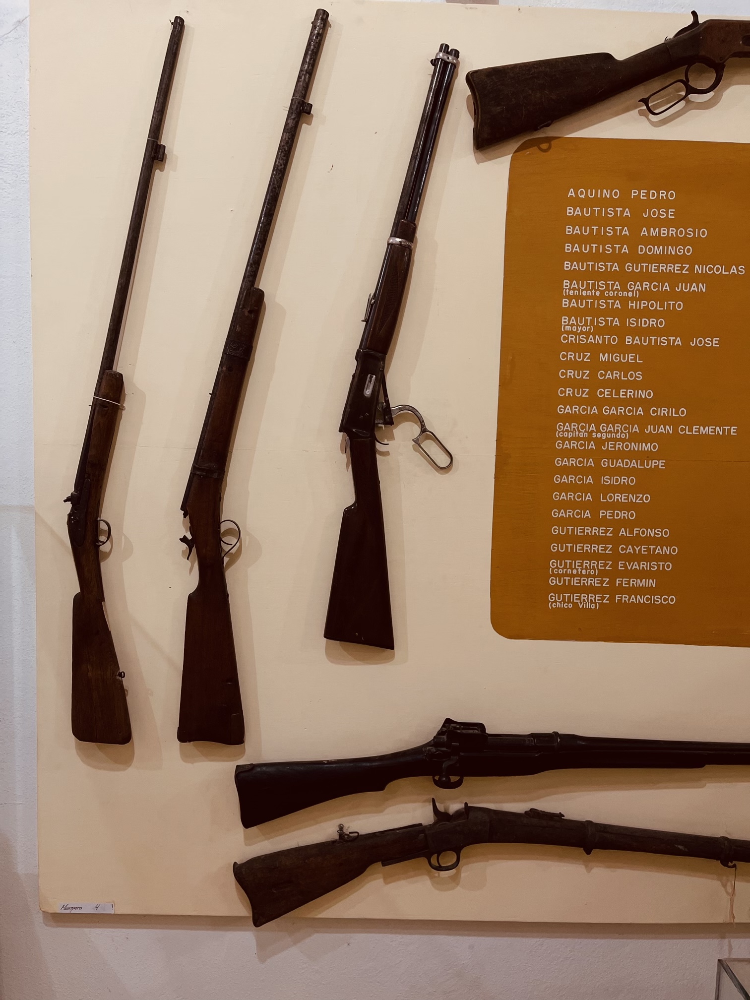
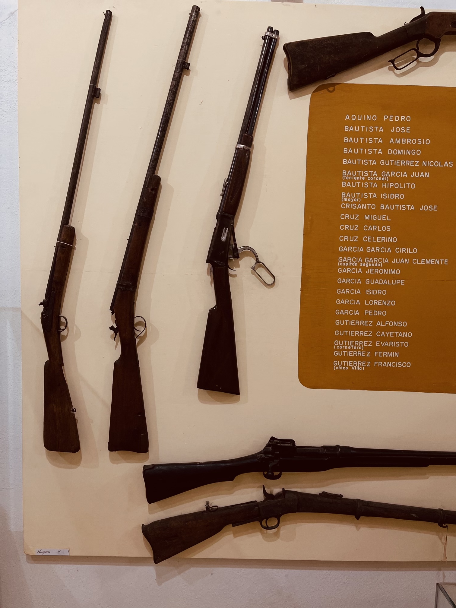
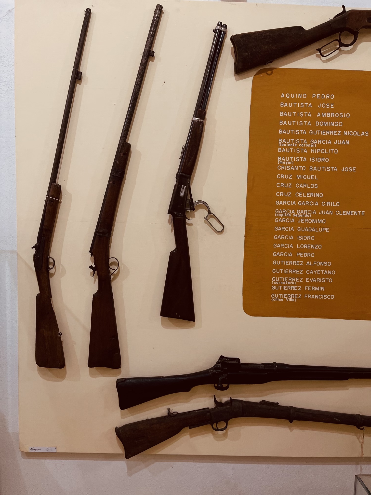

Galería de Esculturas
 

Museo Comunitario Incluyente Shan-Dany Santa Ana Del Valle es una experiencia única para explorar la cultura local de la región. Ofrecemos una variedad de exposiciones y eventos educativos para ayudar a todos los visitantes a comprender y disfrutar la cultura del lugar. Ven y descubre la rica historia y tradiciones de la región de Santa Ana Del Valle.
Escuchar recorrido

Visitar el Museo Comunitario Incluyente Shan-Dany en Santa Ana Del Valle en México es una experiencia única. La exhibición se enfoca en la cultura local y la historia de la comunidad. Los guías son muy amables y serviciales, se siente un ambiente muy cómodo durante toda la visita. Se recomienda altamente para cualquier persona interesada en aprender más sobre la cultura mexicana.
Nuestro Museo Comunitario Incluyente Shan-Dany Santa Ana Del Valle ofrece una experiencia única de aprendizaje e interactiva entre la comunidad. Nuestro Museo es un lugar para contar historias, compartir conocimientos y aprender sobre nuestra cultura. El museo cuenta con una variedad de exposiciones que incluyen arte, música, literatura, ciencia y tecnología. Estamos comprometidos a la inclusión y la diversidad, así como la promoción de la creatividad y el pensamiento crítico, y a prestar un servicio integral a la comunidad. Nuestro Museo ofrece programas para todas las edades, tanto para adultos como para niños y personas con capacidades diferentes.
VISITA NUESTRO RECORRIDO VIRTUAL